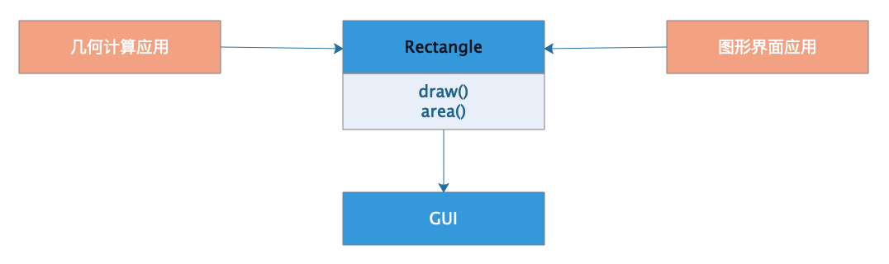
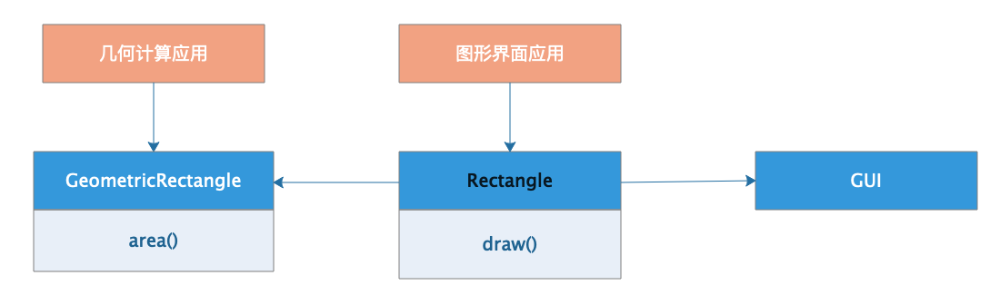
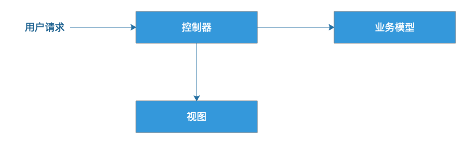
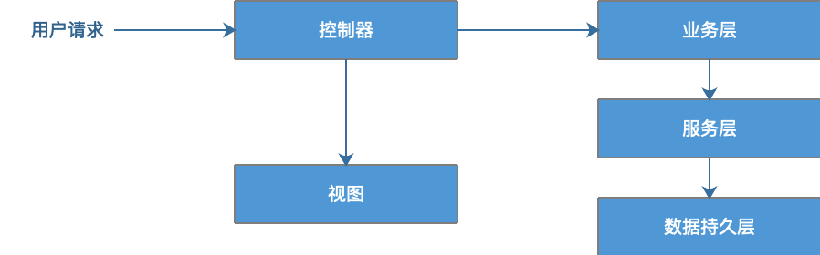
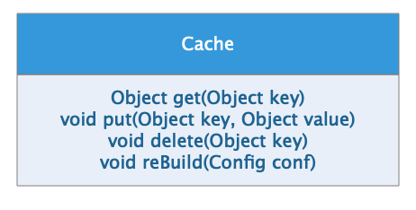
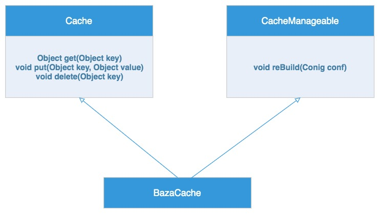
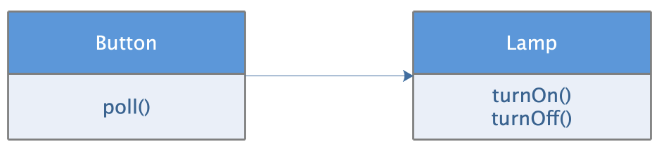
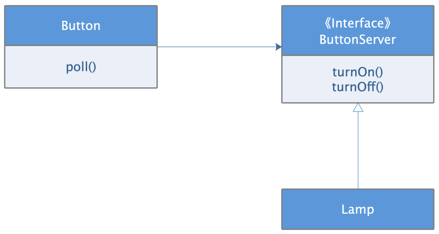

先来看下维基百科对 SOLID 的介绍：
在程序设计领域，SOLID 是由罗伯特·C·马丁在 21 世纪早期引入的记忆术首字母缩略字，指代了面向对象编程和面向对象设计的五个基本原则。当这些原则被一起应用时，它们使得一个程序员开发一个容易进行软件维护和扩展的系统变得更加可能。
SOLID 是以下五个单词的缩写：
- Single Responsibility Principle（单一职责原则）
- Open Closed Principle（开闭原则）
- Liskov Substitution Principle（里氏替换原则）
- Interface Segregation Principle（接口隔离原则）
- Dependency Inversion Principle（依赖倒置原则）
单一职责原则
单一职责原则的英文是 Single Responsibility Principle，缩写为 SRP。
可以从两个角度来理解单一职责原则：
- 一个类或者模块只负责完成一个职责（或者功能）。
- 一个类，应该只有一个引起它变化的原因。
对于这两种理解方式，我分别举例来说明。
一个类或者模块只负责完成一个职责（或者功能）
这里的模块可以看作比类更加粗粒度的代码块，模块中包含多个类，多个类组成一个模块。
来看下边的代码：
1 | public class UserInfo { |
站在不同的应用场景、不同阶段的需求背景下，对 UserInfo 类的职责是否单一的判定，可能都是不一样的：
- 如果在这个社交产品中，用户的地址信息跟其他信息一样，只是单纯地用来展示，那
UserInfo现在的设计就是合理的。 - 如果这个社交产品发展得比较好，之后又在产品中添加了电商的模块，用户的地址信息还会用在电商物流中，那我们最好将地址信息从
UserInfo中拆分出来，独立成用户物流信息（或者叫地址信息、收货信息等）。 - 如果做这个社交产品的公司发展得越来越好，公司内部又开发出了跟多其他产品（可以理解为其他 App）。公司希望支持统一账号系统，也就是用户一个账号可以在公司内部的所有产品中登录。这个时候，我们就需要继续对
UserInfo进行拆分，将跟身份认证相关的信息（比如，email、telephone 等）抽取成独立的类。
在某种应用场景或者当下的需求背景下，一个类的设计可能已经满足单一职责原则了，但如果换个应用场景或着在未来的某个需求背景下，可能就不满足了，需要继续拆分成粒度更细的类。
一个类，应该只有一个引起它变化的原因
我们这里以一个矩形类 Rectangle 为例，如图所示：

Rectangle 有两个方法：
- 绘图方法
draw() - 计算面积方法
area()
现在有两个应用程序要依赖这个 Rectangle 类：
- 几何计算应用程序：只需要计算面积，不需要绘图。
- 图形界面应用程序：绘图的时候，程序需要计算面积。
在计算机屏幕上绘图是一件非常麻烦的事情，所以对于绘图这个需求来说，需要依赖专门的 GUI 库。一个 GUI 库可能有几十 M 甚至数百 M。
本来几何计算程序作为一个纯科学计算程序，主要是一些数学计算代码，现在程序打包完，却不得不把一个不相关的 GUI 库也打包进来。本来程序包可能只有几百 K，现在变成了几百 M。
当图形界面应用程序不得不修改 Rectangle 类的时候，还得重新编译几何计算应用程序，反之亦然。这个情况下，我们就可以说 Rectangle 类有两个引起它变化的原因。
当然，这里用前一种理解也是可以的（一个类或者模块只负责完成一个职责）：Rectangle承担了两个职责，一个是几何形状的计算，一个是在屏幕上绘制图形。
我们可以将 Rectangle 拆分成两个类：
GeometricRectangle： 这个类负责实现图形面积计算方法area()Rectangle：只保留单一绘图方法draw()
现在绘制长方形的时候可以使用计算面积的方法，而几何计算应用程序则不需要依赖一个不相关的绘图方法以及一大堆的 GUI 组件。
拆分后的类图如下所示：

从 Web 应用架构演进看单以职责原则
从事过 Java Web 开发的老码农都经历过下边这 3 个开发阶段。
阶段 1：请求处理以及响应的全部操作都在 Servlet 里，Servlet 获取请求数据，进行逻辑处理，访问数据库，得到处理结果，根据处理结果构造返回的 HTML。
阶段 2：于是后来就有了 JSP，如果说 Servlet 是在程序中输出 HTML，那么 JSP 就是在 HTML 中调用程序。
这个阶段，基于 JSP 开发的 Web 程序在职责上进行了一些最基本的分离：构造页面的 JSP 和处理逻辑的业务模型分离。
阶段 3：各种 MVC 框架的出现，MVC 框架通过控制器将视图与模型彻底分离。

有了 MVC，就可以顺理成章地将复杂的业务模型进行分层了。通过分层方式，将业务模型分为业务层、服务层、数据持久层，使各层职责进一步分离，更符合单一职责原则。

也是因为 MVC 框架的出现，才使得前后端开发成为两个不同的工种，前端工程师只做视图模板开发，后端工程师只做业务开发，彼此之间没有直接的依赖和耦合，各自独立开发、维护自己的代码。
如何判断一个类是否满足单一职责？
前边提到过，不同的应用场景、不同阶段的需求背景、不同的业务层面，对同一个类的职责是否单一，可能会有不同的判定结果。我们可以通过一些侧面指标来指导我们的判断。
出现下面这些情况就有可能说明类的设计不满足单一职责原则：
- 类中的代码行数、函数或者属性过多
- 类依赖的其他类过多，或者依赖此类的其他类过多
- 私有方法过多
- 比较难给类起一个合适的名字
- 类中大量的方法都是集中操作类中的某几个属性
开闭原则
开闭原则是所有设计原则中最有用的，因为扩展性是代码质量最重要的衡量标准之一。在 23 种经典设计模式中，大部分设计模式都是为了解决代码的扩展性问题而存在的，主要遵从的设计原则就是开闭原则。
开闭原则的英文是 Open Closed Principle，缩写为 OCP。
开闭原则说的是：软件实体（模块、类、函数等等）应该对扩展是开放的，对修改是关闭的。
- 对扩展是开放的，意味着软件实体的行为是可扩展的，当需求变更的时候，可以对模块进行扩展，使其满足需求变更的要求。
- 对修改是关闭的，意味着当对软件实体进行扩展的时候，不需要改动当前的软件实体；不需要修改代码；对于已经完成的类文件不需要重新编辑；对于已经编译打包好的模块，不需要再重新编译。
两者结合起来表述为：添加一个新的功能应该是，在已有代码基础上扩展代码（新增模块、类、方法等），而非修改已有代码（修改模块、类、方法等）。
举例说明开闭原则
1 | public class Alert { |
以上代码中的 AlertRule 存储告警规则，可以自由设置。
Notification 是告警通知类，支持邮件、短信、微信、手机等多种通知渠道。
NotificationEmergencyLevel 表示通知的紧急程度，不同的紧急程度对应不同的发送渠道。
业务逻辑主要集中在 check() 函数中：当接口的 TPS 超过某个预先设置的最大值时，以及当接口请求出错数大于某个最大允许值时，就会触发告警。
现在，如果我们需要添加一个功能，当每秒钟接口超时请求个数，超过某个预先设置的最大阈值时，我们也要触发告警发送通知。
不遵循开闭原则的修改
主要的改动有两处：
- 修改
check()函数的入参，添加一个新的统计数据timeoutCount，表示超时接口请求数 - 在
check()函数中添加新的告警逻辑
1 |
|
如此进行的代码修改导致将导致以下问题：
- 调用这个接口的代码都要做相应的修改
- 修改了
check()函数，相应的单元测试都需要修改
粗暴一点说，当我们在代码中看到 if/else 或者 switch/case 关键字的时候，基本可以判断违反开闭原则了。
遵循开闭原则的修改
重构一下之前的 Alert 代码，让它的扩展性更好一些：
- 将
check()函数的多个入参封装成ApiStatInfo类 - 引入
handler的概念，将if判断逻辑分散在各个handler中
1 | public class Alert { |
现在我们基于重构之后的代码来实现每秒钟接口超时请求个数超过某个最大阈值就告警的新功能就方便多了。
不考虑调用方修改的情况下，实现方只需进行两处的改动：
- 在
ApiStatInfo类中添加新的属性timeoutCount - 添加新的
TimeoutAlertHander类
调用方的改动也很简单：
- 把
TimeoutAlertHander类的实例注册到alert对象中 - 为
apiStatInfo对象 设置timeoutCOunt的值。
修改后代码如下：
1 | public class Alert { // 代码未改动... } |
重构之后的代码更加灵活和易扩展。如果我们要想添加新的告警逻辑，只需要基于扩展的方式创建新的 handler 类即可，不需要改动原来的 check() 函数的逻辑。而且，我们只需要为新的 handler 类添加单元测试，老的单元测试都不会失败，也不用修改。
开闭原则的设计初衷是：只要它没有破坏原有的代码的正常运行，没有破坏原有的单元测试，我们就可以说，这是一个合格的代码改动。
通过上边举过的例子可以看出：添加一个新功能，不可能任何模块、类、方法的代码都不「修改」，这个是做不到的。我们要做的是尽量让修改操作更集中、更少、更上层，尽量让最核心、最复杂的那部分逻辑代码满足开闭原则。
同样一个代码改动，在粗代码粒度下，被认定为「修改」，在细代码粒度下，又可以被认定为「扩展」。
- 比如，改动一，添加属性和方法相当于修改类，在类这个层面，这个代码改动可以被认定为「修改」；
- 代码改动并没有修改已有的属性和方法，在方法（及其属性）这一层面，它又可以被认定为「扩展」。
如何做到「对扩展开放、修改关闭」？
站在「术」的角度：
为了尽量写出扩展性好的代码，我们要时刻具备扩展意识、抽象意识、封装意识。这些「潜意识」可能比任何开发技巧都重要。
站在「器」的角度：
最常用来提高代码扩展性的方法有：多态、依赖注入、基于接口而非实现编程，以及大部分的设计模式（比如，装饰、策略、模板、职责链、状态）。
来看一个遵循开闭原则的例子：
结合了多态、依赖注入、基于接口而非实现通过 Kafka 来发送异步消息。
- 我们抽象了一组跟具体消息队列（Kafka）无关的异步消息接口
- 所有上层系统都依赖这组抽象的接口编程，并且通过依赖注入的方式来调用
- 当我们要替换新的消息队列的时候，比如将 Kafka 替换成 RocketMQ，可以很方便地拔掉老的消息队列实现，插入新的消息队列实现。
1 |
|
实现开闭原则的关键是抽象。当一个模块依赖的是一个抽象接口的时候，就可以随意对这个抽象接口进行扩展，这个时候，不需要对现有代码进行任何修改，利用接口的多态性，通过增加一个新实现该接口的实现类，就能完成需求变更。
开闭原则可以说是软件设计原则的原则，是软件设计的核心原则，其他的设计原则更偏向技术性，具有技术性的指导意义，而开闭原则是方向性的，在软件设计的过程中，应该时刻以开闭原则指导、审视自己的设计：当需求变更的时候，现在的设计能否不修改代码就可以实现功能的扩展？如果不是，那么就应该进一步使用其他的设计原则和设计模式去重新设计。
如何在项目中灵活应用开闭原则？
写出支持「对扩展开放、对修改关闭」的代码的关键是预留扩展点：
- 对于一些比较确定的、短期内可能就会扩展，或者需求改动对代码结构影响比较大的情况，或者实现成本不高的扩展点，在编写代码的时候，我们就可以事先做些扩展性设计。
- 反之，对于一些不确定未来是否要支持的需求，或者实现起来比较复杂的扩展点，我们可以等到有需求驱动的时候，再通过重构代码的方式来支持扩展的需求。
话外音：这种技术视野的前提是需要在某个领域进行深耕。
最后提醒一下，天下没有免费的午餐，有些情况下，代码的扩展性会跟可读性相冲突。很多时候，我们都需要在扩展性和可读性之间做权衡。
里氏替换原则
单一职责原则的英文是 Liskov Substitution Principle，缩写为 LSP。
官方一些的介绍：子类对象能够替换程序中父类对象出现的任何地方，并且保证原来程序的逻辑行为不变及正确性不被破坏。
通俗地说就是：子类型必须能够替换掉它们的基类型。
通俗地详细点说：程序中，所有使用基类的地方，都应该可以用子类代替。
里氏替换原则示例 1
如下代码中，父类 Transporter 使用 org.apache.http 库中的 HttpClient 类来传输网络数据。子类 SecurityTransporter 继承父类 Transporter，增加了额外的功能，支持传输 appId 和 appToken 安全认证信息。
1 | public class Transporter { |
子类 SecurityTransporter 的设计完全符合里式替换原则，可以替换父类出现的任何位置，并且原来代码的逻辑行为不变且正确性也没有被破坏。
这样看来里氏替换原则不就是简单利用了多态的特性吗？我们通过一个反例来看下这两者的区别：
通俗地说，接口（抽象类）的多个实现就是多态。多态可以让程序在编程时面向接口进行编程，在运行期绑定具体类，从而使得类之间不需要直接耦合，就可以关联组合，构成一个更强大的整体对外服务。
我们对刚刚那个例子中 SecurityTransporter 类的 sendRequest() 方法稍加改造一下。
- 改造前，如果
appId或者appToken没有设置，我们就不做校验； - 改造后，如果
appId或者appToken没有设置，则直接抛出NoAuthorizationRuntimeException未授权异常。
1 | public class SecurityTransporter extends Transporter { |
改造之后的代码仍然可以通过 Java 的多态语法，动态地用子类 SecurityTransporter 来替换父类 Transporter，也并不会导致程序编译或者运行报错。但是，从设计思路上来讲，SecurityTransporter 的设计是不符合里式替换原则的。
虽然从定义描述和代码实现上来看，多态和里式替换有点类似，但它们关注的角度是不一样的。
- 多态是面向对象编程的一大特性，也是面向对象编程语言的一种语法。它是一种代码实现的思路。
- 里式替换是一种设计原则，是用来指导继承关系中子类该如何设计的，子类的设计要保证在替换父类的时候，不改变原有程序的逻辑以及不破坏原有程序的正确性。
所以，判断子类的设计实现是否违背里式替换原则，还有一个小窍门：那就是拿父类的单元测试去验证子类的代码。如果某些单元测试运行失败，就有可能说明，子类的设计实现没有完全地遵守父类的约定，子类有可能违背了里式替换原则。
里氏替换原则示例 2
我们来看个违反历史替换原则的例子：
Circle 和 Square 继承了基类 Shape，然后在应用的方法中，根据输入 Shape 对象类型进行判断，根据对象类型选择不同的绘图函数将图形画出来。
1 | void drawShape(Shape shape) { |
这种写法的代码既常见又糟糕，它同时违反了开闭原则和里氏替换原则。
- 首先看到这样的
if/else代码，就可以判断违反了（我们刚刚在上个部分讲过的）开闭原则：当增加新的Shape类型的时候，必须修改这个方法，增加else if代码。 - 其次也因为同样的原因违反了里氏替换原则：当增加新的
Shape类型的时候，如果没有修改这个方法，没有增加else if代码，那么这个新类型就无法替换基类Shape。
要解决这个问题其实也很简单，只需要在基类 Shape 中定义 draw 方法，所有 Shape 的子类，Circle、Square 都实现这个方法就可以了：
1 | public abstract Shape{ |
上面那段 drawShape() 代码也就可以变得更简单：
1 | void drawShape(Shape shape) { |
这段代码既满足开闭原则：增加新的类型不需要修改任何代码。也满足里氏替换原则：在使用基类的这个方法中，可以用子类替换，程序正常运行。
如何在实践中遵循里氏替换原则
子类在设计的时候，要遵守父类的行为约定（或者叫协议）。父类定义了函数的行为约定，那子类可以改变函数的内部实现逻辑，但不能改变函数原有的行为约定，这也是我们常说的「Design By Contract」，中文翻译就是「按照协议（契约、约定）来设计」。
以下是三种常见的违背约定的情况：
- 子类违背父类声明要实现的功能
- 如：父类中提供的
sortOrdersByAmount()订单排序函数，是按照金额从小到大来给订单排序的，而子类重写这个sortOrdersByAmount()订单排序函数之后，是按照创建日期来给订单排序的。那子类的设计就违背里式替换原则。
- 如：父类中提供的
- 子类违背父类对输入、输出、异常的约定
- 如：在父类中，某个函数约定：运行出错的时候返回
null；获取数据为空的时候返回空集合（empty collection）。而子类重载函数之后，实现变了，运行出错返回异常（exception），获取不到数据返回null。 - 在父类中，某个函数约定，输入数据可以是任意整数，但子类实现的时候，只允许输入数据是正整数，负数就抛出异常，也就是说，子类对输入的数据的校验比父类更加严格，那子类的设计就违背了里式替换原则。
- 在父类中，某个函数约定，只会抛出
ArgumentNullException异常，那子类的设计实现中只允许抛出ArgumentNullException异常，任何其他异常的抛出，都会导致子类违背里式替换原则。
- 如：在父类中，某个函数约定：运行出错的时候返回
- 子类违背父类注释中所罗列的任何特殊说明
- 如：父类中定义的
withdraw()提现函数的注释是这么写的：「用户的提现金额不得超过账户余额……」，而子类重写withdraw()函数之后，针对 VIP 账号实现了透支提现的功能，也就是提现金额可以大于账户余额
- 如：父类中定义的
子类的协议不能比父类更严格，否则使用者在用子类替换父类的时候，就会因为更严格的协议而失败。
在类的继承中，如果父类方法的访问控制是 protected，那么子类 override 这个方法的时候，可以改成是 public，但是不能改成 private。因为 private 的访问控制比 protected 更严格，能使用父类 protected 方法的地方，不能用子类的 private 方法替换，否则就是违反里氏替换原则的。相反，如果子类方法的访问控制改成 public 就没问题，即子类可以有比父类更宽松的协议。同样，子类 override 父类方法的时候，不能将父类的 public 方法改成 protected，否则会出现编译错误。
实践中，当你继承一个父类仅仅是为了复用父类中的方法的时候，那么很有可能你离错误的继承已经不远了。一个类如果不是为了被继承而设计，那么最好就不要继承它。
粗暴一点地说，如果不是抽象类或者接口，最好不要继承它。
如果你确实需要使用一个类的方法，最好的办法是组合这个类而不是继承这个类，这就是人们通常说的组合优于继承。
1 | Class A{ |
接口隔离原则
接口隔离原则的英文是 SInterface Segregation Principle，缩写为 ISP。
这个原则是说：客户端不应该强迫依赖它不需要的接口。
我们可以从三个角度理解「接口」：
- 一组 API 接口集合
- 单个 API 接口或函数
- OOP 中的接口概念
下面我们逐个进行说明。
把「接口」理解为一组 API 接口集合
在设计微服务或者类库接口的时候，如果部分接口只被部分调用者使用，那我们就需要将这部分接口隔离出来，单独给对应的调用者使用，而不是强迫其他调用者也依赖这部分不会被用到的接口。
举例说明：
1 | public interface UserService { |
删除用户是一个非常慎重的操作，我们只希望通过后台管理系统来执行，所以这个接口只限于给后台管理系统使用。如果我们把它放到 UserService 中，那所有使用到 UserService 的系统，都可以调用这个接口。不加限制地被其他业务系统调用，就有可能导致误删用户。
参照接口隔离原则，调用者不应该强迫依赖它不需要的接口，将删除接口单独放到另外一个接口 RestrictedUserService 中，然后将 RestrictedUserService 只打包提供给后台管理系统来使用。
把「接口」理解为单个 API 接口或函数
隔离原则就可以理解为：函数的设计要功能单一，不要将多个不同的功能逻辑在一个函数中实现。
接口隔离原则跟单一职责原则有点类似，不过稍微还是有点区别。
- 单一职责原则针对的是模块、类、接口的设计
- 接口隔离原则相对于单一职责原则，一方面它更侧重于接口的设计，另一方面它的思考的角度不同
接口隔离原则提供了一种判断接口是否职责单一的标准：通过调用者如何使用接口来间接地判定。如果调用者只使用部分接口或接口的部分功能，那接口的设计就不够职责单一。
举例说明：
1 | public class Statistics { |
在上面的代码中，count() 函数的功能不够单一，包含很多不同的统计功能，比如，求最大值、最小值、平均值等等。如果某个统计需求只涉及 Statistics 罗列的统计信息中一部分，而 count() 函数每次都会把所有的统计信息计算一遍，就会做很多无用功，势必影响代码的性能
按照接口隔离原则，我们应该把 count() 函数拆成几个更小粒度的函数，每个函数负责一个独立的统计功能：
1 | public Long max(Collection<Long> dataSet) { //... } |
把「接口」理解为 OOP 中的接口概念
接口的设计要尽量单一，不要让接口的实现类和调用者，依赖不需要的接口函数或方法。
使用接口隔离原则，就是定义多个接口，不同调用者依赖不同的接口，只看到自己需要的方法。而实现类则实现这些接口，通过多个接口将类内部不同的方法隔离开来。
那么如果强迫用户依赖他们不需要的方法，会导致什么后果呢？
- 一来，用户可以看到这些他们不需要，也不理解的方法，这样无疑会增加他们使用的难度，如果错误地调用了这些方法，就会产生 bug。
- 二来，当这些方法如果因为某种原因需要更改的时候，虽然不需要但是依赖这些方法的用户程序也必须做出更改，这是一种不必要的耦合。
举例说明：
把「接口」理解为 OOP 中的接口概念
假如我们需要开发一个支持根据远程配置中心配置来动态更改缓存配置的缓存服务。

这个缓存服务 Client 类的方法主要包含两个部分：
- 一部分是缓存服务方法，
get()、put()、delete()这些，这些方法是面向调用者的 - 另一部分是配置更新方法
reBuild()，这个方法主要是给远程配置中心调用的
但是问题是，Cache 类的调用者如果看到 reBuild() 方法，并错误地调用了该方法，就可能导致 Cache 连接被错误重置，导致无法正常使用 Cache 服务。所以必须要将 reBuild() 方法向缓存服务的调用者隐藏，而只对远程配置中心的本地代理开放这个方法。
我们可以进行如下调整：
实现类同时实现 Cache 接口和 CacheManageable 接口，其中 Cache 接口提供标准的 Cache 服务方法，应用程序只需要依赖该接口。而 CacheManageable 接口则对外暴露 reBuild() 方法。

使用接口隔离原则，就是定义多个接口，不同调用者依赖不同的接口，只看到自己需要的方法。而实现类则实现这些接口，通过多个接口将类内部不同的方法隔离开来。
依赖倒置原则
单一职责原则和开闭原则的原理比较简单，但是，想要在实践中用好却比较难。而依赖倒置原则正好相反。依赖倒置原则用起来比较简单，但概念理解起来比较难。
依赖倒置原则的英文是 Dependency Inversion Principle，缩写为 DIP。
依赖倒置原则说的是：高层模块不依赖低层模块，它们共同依赖同一个抽象，这个抽象接口通常是由高层模块定义，低层模块实现。同时抽象不要依赖具体实现细节，具体实现细节依赖抽象。
所谓高层模块和低层模块的划分，简单来说就是，在调用链上，调用者属于高层，被调用者属于低层。
在具体讲解依赖倒置原则前，我们先来看几个与之有关的常见概念：控制反转、依赖注入、依赖注入框架。
控制反转（IOC）
控制反转是一个比较笼统的设计思想，并不是一种具体的实现方法，一般用来指导框架层面的设计。
框架提供了一个可扩展的代码骨架，用来组装对象、管理整个执行流程。程序员利用框架进行开发的时候，只需要往预留的扩展点上，添加跟自己业务相关的代码，就可以利用框架来驱动整个程序流程的执行。
这里的「控制」指的是对程序执行流程的控制，而「反转」指的是在没有使用框架之前，程序员自己控制整个程序的执行。在使用框架之后，整个程序的执行流程可以通过框架来控制。流程的控制权从程序员「反转」到了框架。
我们举个例子来看一下：
1 | public class UserServiceTest { |
在上面的代码中，所有的流程都由程序员来控制。如果我们抽象出一个下面这样一个框架，我们再来看，如何利用框架来实现同样的功能。
1 | public abstract class TestCase { |
把这个简化版本的测试框架引入到工程中之后，我们只需要在框架预留的扩展点，也就是 TestCase 类中的 doTest() 抽象函数中，填充具体的测试代码就可以实现之前的功能了，完全不需要写负责执行流程的 main() 函数了。
1 | public class UserServiceTest extends TestCase { |
控制反转的方式有很多，除了依赖注入，还有模板模式等，我们常用的 Spring 框架主要是通过依赖注入来实现的控制反转。
下面我们来看看依赖注入。
依赖注入（DI）
依赖注入跟控制反转恰恰相反，它是一种具体的编码技巧。
依赖注入用一句话来概括就是：不通过 new() 的方式在类内部创建依赖类对象，而是将依赖的类对象在外部创建好之后，通过构造函数、函数参数等方式传递（或注入）给类使用。
这里给出一个例子，分别用非依赖注入和依赖注入来实现同一个需求：Notification 类负责消息推送，依赖 MessageSender 类实现推送商品促销、验证码等消息给用户。
代码如下：
1 | // 非依赖注入实现方式 |
通过依赖注入的方式来将依赖的类对象传递进来，这样就提高了代码的扩展性，我们可以灵活地替换依赖的类（将 MessageSender 定义成接口）。
依赖注入框架（DI Framework）
在实际的软件开发中，一些项目可能会涉及几十、上百、甚至几百个类，类对象的创建和依赖注入会变得非常复杂。如果这部分工作都是靠程序员自己写代码来完成，容易出错且开发成本也比较高。而对象创建和依赖注入的工作，本身跟具体的业务无关，我们完全可以抽象成框架来自动完成。
这个框架就是「依赖注入框架」。我们只需要通过依赖注入框架提供的扩展点，简单配置一下所有需要创建的类对象、类与类之间的依赖关系，就可以实现由框架来自动创建对象、管理对象的生命周期、依赖注入等原本需要程序员来做的事情。
常见的依赖注入框架有：Google Guice、Java Spring、Pico Container、Butterfly Container 等。
框架的一个特点是，当开发者使用框架开发一个应用程序时，无需在程序中调用框架的代码，就可以使用框架的功能特性。比如：
- 程序不需要调用 Spring 的代码，就可以使用 Spring 的依赖注入、MVC 这些特性，开发出低耦合、高内聚的应用代码
- 程序不需要调用 Tomcat 的代码，就可以监听
HTTP协议端口，处理HTTP请求
依赖倒置原则（DIP）
最后回到我们这部分的主角。
这条原则主要也是用来指导框架层面的设计，跟前面讲到的控制反转类似。
我们先用 Tomcat 来说明一下这个原则：Tomcat 是运行 Java Web 应用程序的容器。我们编写的 Web 应用程序代码只需要部署在 Tomcat 容器下，便可以被 Tomcat 容器调用执行。按照之前的划分原则，Tomcat 就是高层模块，我们编写的 Web 应用程序代码就是低层模块。Tomcat 和应用程序代码之间并没有直接的依赖关系，两者都依赖同一个「抽象」，也就是 Servlet 规范。Servlet 规范不依赖具体的 Tomcat 容器和应用程序的实现细节，而 Tomcat 容器和应用程序依赖 Servlet 规范。
再用 JDBC 为例子说明一下依赖倒置原则：我们在 Java 开发中访问数据库，代码并不直接依赖数据库的驱动，而是依赖 JDBC。各种数据库的驱动都实现了 JDBC，当应用程序需要更换数据库的时候，不需要修改任何代码。这正是因为应用代码，也就是高层模块，不依赖数据库驱动，而是依赖抽象 JDBC，而数据库驱动，作为低层模块，也依赖 JDBC。
这里可能会存在一个误区：我们在日常的 Web 开发中， Service 层会依赖 DAO 层提供的接口，但这种依赖并不是依赖倒置原则！在依赖倒置原则中，除了具体实现要依赖抽象，最重要的是，抽象是属于谁的抽象。
最后再举一个依赖倒置原则的例子：
Button 按钮控制 Lamp 灯泡，按钮按下的时候，灯泡点亮或者关闭。按照常规的设计思路，我们可能会设计出如下的类图关系，Button 类直接依赖 Lamp 类。

这样设计的问题在于，Button 依赖 Lamp，那么对 Lamp 的任何改动，都可能会使 Button 受到牵连，做出联动的改变。同时，我们也无法重用 Button 类。
解决之道就是将这个设计中的依赖于实现，重构为依赖于抽象。这里的抽象就是：打开关闭目标对象。
- 由
Button定义一个抽象接口ButtonServer，在ButtonServer中描述抽象：打开、关闭目标对象 - 由具体的目标对象，比如
Lamp实现这个接口，从而完成Button控制Lamp这一功能需求

通过这样一种依赖倒置，Button 不再依赖 Lamp，而是依赖抽象 ButtonServer，而 Lamp 也依赖 ButtonServer，高层模块和低层模块都依赖抽象。Lamp 的改动不会再影响 Button，而 Button 可以复用控制其他目标对象，比如电机，或者任何由按钮控制的设备，只要这些设备实现 ButtonServer 接口就可以了。
依赖倒置原则也被称为好莱坞原则：Don’t call me，I will call you.
遵循依赖倒置原则有这样几个编码守则：
- 应用代码中多使用抽象接口，尽量避免使用那些多变的具体实现类。
- 不要继承具体类，如果一个类在设计之初不是抽象类，那么尽量不要去继承它。对具体类的继承是一种强依赖关系，维护的时候难以改变。
- 不要重写（
Override）包含具体实现的函数。
软件开发有时候像变魔术一样，常常表现出违反常识的特性，让人目眩神晕，而这正是软件编程这门艺术的魅力所在，感受到这种魅力，在自己的软件设计开发中体现出这种魅力，你就迈进了软件高手的大门。